공조냉동기계산업기사 (2008-05-11 기출문제)
1과목: 공기조화
1. 다음 중 여름철 냉방에 가장 중요한 것은?
- 온도 변화
- 압력 변화
- 탄산가스량 변화
- 비체적 변화
(정답률: 93%)

2. 열원방식의 분류 중 특수 열원방식으로 분류되지 않는 것은?
- 열회수 방식(전열 교환 방식)
- 흡수식 냉온수기 방식
- 지역 냉난방 방식
- 태양열 이용 방식
(정답률: 76%)
3. 공조용 열원기기 중 흡수식 냉동기에 관한 다음 설명 중 옳지 않은 것은?
- 부분 부하에 대한 대응성이 나쁘다.
- 압축장치가 없어 진동이 적다.
- 가열원으로는 증기나 가스 등이 이용된다.
- 증기 압축식에 비해서 냉각탑 용량이 커진다.
(정답률: 60%)
4. 다음은 팬 코일 유니트 방식의 배관 방법에 따른 장단점 및 특징을 기술한 내용이다. 틀린 것은? (단, 2관식, 3관식, 4관식을 비교)
- 3관식에서는 손실열량이 타방식에 비하여 거의 없다.
- 2관식에서는 냉ㆍ난방의 동시운전이 불가능 하다.
- 4관식이 설비비면에서 가장 불리하다.
- 4관식은 동시에 냉ㆍ난방운전이 가능하다.
(정답률: 72%)
5. 다음의 온수 난방에 관한 설명 중 옳지 않은 것은?
- 밀폐식일 경우에는 배고나의 부식이 적고 수명이 길다.
- 각 방열기기에 공급되는 온수가 균일하고 양호하게 순환되도록 한다.
- 온수순환으로 인한 소음이나 진동 등의 장애가 일어나지 않도록 한다.
- 팽창탱크의 팽창관에는 밸브를 부탁하여 유량을 조절할 수 있도록 한다.
(정답률: 75%)
6. 열교환기 중 공조기 내부에 주로 설치되는 공기가열기 또는 공기냉각기를 흐르는 냉ㆍ온수의 통로수는 코일의 배열방식에 따라 나눌 수 있다. 이 중 코일의 배열방식에 따른 종류가 아닌 것은?
- 풀 서킷
- 하프 서킷
- 더블 서킷
- 플로우 서킷
(정답률: 70%)
7. 공조 부하 계산에서 백열등 1kW당 방열량은?
- 1kcal/h
- 600kcal/h
- 860kcal/h
- 1000kcal/h
(정답률: 86%)
8. 공기조화를 하고 있는 건축물의 출입구로부터 들어오는 틈새 바함을 줄이기 위한 가장 효과적인 방법은?
- 출입구에 자동 개폐되는 문을 사용한다.
- 출입구에 회전문을 사용한다.
- 출입구에 플로어 힌지를 부착한 자재문을 사용한다.
- 출입구에 수동문을 사용한다.
(정답률: 87%)
9. 다음 습공기선도에서 습공기의 상태가 1지점에서 1‘지점을 걸쳐 2지점으로 이동하였다. 이 습공기는 어떤 과정인가? (단, h1=h1' 이다.)
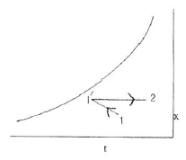
- 냉각 감습 - 가열
- 냉각 - 제습제를 이용한 제습
- 순환수 가습 - 가열
- 온수 감습 - 냉각
(정답률: 71%)
10. 지하철에 적용할 기계환기 방식의 기능으로 맞지 않는 것은?
- 피스톤효과로 유발된 열차풍으로 환기효과를 높인다.
- 터널내 고온의 공기를 외부로 배출한다.
- 터널내 잔류 열을 배출하고 신선외기를 도입하여 토양의 발열효과를 상승시킨다.
- 화재시 배연기능을 달성한다.
(정답률: 84%)
11. 덕트 설계시 주의할 사항 중 옳은 것은?
- 곡부분(曲部分)은 될 수 있는 대로 곡률 반경을 크게 한다.
- 확대부분의 각도는 가능한 한 45° 이상으로 한다.
- 축소부분의 각도는 가능한 한 60° 이내로 한다.
- 덕트 단면의 아스펙트 비는 가능한 한 6보다 크게 한다.
(정답률: 71%)
12. 어떤 실내의 전체 취득열량이 7600kcal/h, 잠열량이 2100kcal/h 이다. 이 때 실내를 26℃, 50%(RH)로 유지시키기 위해 취출 온도차를 10℃로 일정하게 하영 송풍한다면 실내 현열비는 약 얼마인가?
- 0.28
- 0.68
- 0.72
- 0.88
(정답률: 63%)
13. 다음은 난방 설비에 관한 설명이다. 옳은 것은?
- 온수난방은 온수의 현열과 잠열을 이용한 것이다.
- 온풍난방은 온풍의 현열과 잠열을 이용한 것이다.
- 증기난방은 증기의 현열을 이용한 대류 난방이다.
- 복사난방은 열원에서 나오는 복사에너지를 이용한 것이다.
(정답률: 90%)
14. 보일러의 안전장치 중 옳지 않은 것은?
- 보일러는 기기 내에 고압의 증기나 고온의 물을 저장하고 있으므로 안전을 위하여 충분한 강도를 지닌 구조로 되어 있음과 동시에 철저한 관리를 하여야 한다.
- 수온이 120℃가 넘는 온수보일러의 경우는 릴리프 밸브를, 수온이 120℃ 이하의 온수보일러에서는 안전밸브가 설치된다.
- 연소장치에서 압력, 온도의 상한을 제한하는 안전장치와 광전관 등에 의한 착화, 감화의 안전장치가 쓰인다.
- 잔류 연료가스의 폭발을 방지하기 위하여 시퀀스제어가 사용되고 있다.
(정답률: 55%)
15. 송풍기를 원심, 축류 및 기타로 크게 나눌 때 원심 송풍기에 솎하지 않는 것은?
- 터보 송풍기
- 리미트 로드 송풍기
- 익형 송풍기
- 프로펠라 송풍기
(정답률: 80%)
16. 내각수 출입구 온도차를 5℃, 냉각수의 처리 열량을 3900kcal/hㆍRT로 하면 냉각수량(ℓ/minㆍRT)은 얼마인가? (단, 냉각수의 비열은 1kcal/kg℃로 한다.)
- 10
- 13
- 18
- 20
(정답률: 64%)
17. 다음 사업장 중에서 상대습도(%)가 가장 낮은 곳은?
- 렌즈 연마실
- 빵 발효 식품 공장
- 담배 원료 가공 공장
- 반도체 공장
(정답률: 87%)
18. 높은 습도를 요구하는 경우에 사용하는 증발식 가습장치의 종류로 옳은 것은?
- 원심식, 초음파식, 분무식
- 전열식, 전극식, 적외선식
- 과열증기식, 분무식, 원심식
- 회전식, 모세관식, 적하식
(정답률: 74%)
19. 다음 중 개별 공조방식의 특징이 아닌 것은?
- 외기냉방이 용이하다.
- 실내공기 청정도가 나빠지고 소음이 크다.
- 개별 실내 제어에 적합하다.
- 기존 설치된 건물에 비교적 용이하게 설치 할 수 있다.
(정답률: 68%)
20. 공기조화기의 냉수코일을 설계하고자 할 때의 설명으로 적당하지 않은 것은?
- 코일을 통과하는 물의 속도는 1m/s 정도가 되도록 한다.
- 코일 출입구의 수온차는 대개 5 ~ 10℃ 정도가 되도록 한다.
- 공기와 물의 흐름은 병류(평행류)로 하는 것이 대수평균 온도차가 크게 된다.
- 습코일인 경우가 건코일인 경우보다 열통과율이 크게된다.
(정답률: 76%)
2과목: 냉동공학
21. 다음 이상 기체의 등온 과정 설명으로 옳은 것은? (단, S:엔트로피, Q:열량, W:일, U:내부에너지)
- dS=0
- dQ=0
- dW=0
- dU=0
(정답률: 51%)
22. 다음 설명 중 옳지 않은 것은?
- 열전도는 물질 내에서 열이 전달되는 것이기 때문에 공기 중에서는 열전도가 일어나지 않는다.
- 열이 기체나 액체의 이동에 의하여 이동되는 현상을 열전달이라 한다.
- 고온 물체와 저온물체 사이에서는 복사에 의해서도 열이 전달된다.
- 온도가 다른 유체가 고체벽을 사이에 두고 있을 때 온도가 높은 유체에서 온도가 낮은 유체로 열이 이동되는 현상을 열통과라 한다.
(정답률: 78%)
23. 다음 냉매 중 에탄계 프레온족이 아닌 것은?
- R-22
- R-113
- R-123a
- R-134a
(정답률: 62%)
24. 냉동 싸이클에서 응축온도가 32℃, 증발온도가 -10℃이면 성적 계수는 얼마인가?
- 9.73
- 8.45
- 7.26
- 6.26
(정답률: 55%)
25. 염화나트륨 브라인의 공정점(共晶點)은?
- -55℃
- -36℃
- -42℃
- -21℃
(정답률: 76%)
26. 제빙장치에서 저빙고의 수용 능력 기준을 1m3당 0.75톤으로 하고 있다. 이 때 온도는 얼마로 유지하는가?
- 0~5℃
- -2~-7℃
- -15~-25℃
- -40~-50℃
(정답률: 58%)
27. 핫가스(Hot gas)제상을 하는 소형 냉동장치에 있어서 핫가스의 흐름을 제어하는 것은?
- 캐필러리튜브(모세관)
- 자동팽창밸브(AEV)
- 솔래노이드밸브(전자밸브)
- 4방향밸브
(정답률: 82%)
28. 온도식 팽창밸브(TEV)의 작동과 관계없는 압력은?
- 증발기 압력
- 스프링의 압력
- 감온통의 압력
- 응축 압력
(정답률: 66%)
29. C.A 냉장고의 용도로 옳은 것은?
- 가정용 냉장고로 쓰인다.
- 제빙용으로 주로 쓰인다.
- 청과물 저장에 쓰인다.
- 공조용으로 철도, 항공에 주로 쓰인다.
(정답률: 92%)
30. 만액식 증발기의 특징을 설명한 것으로 맞지 않는 것은?
- 전열작용이 건식보다 나쁘다.
- 냉매순환량이 건식에 비해 많아진다.
- 암모니아의 경우 액분리기를 설치한다.
- 증발기 내에 오일이 고일 염려가 있으므로 프레온의경 우 유회수장치가 필요하다.
(정답률: 74%)
31. 몰리에르 선도상에서 압력이 커짐에 따라 포화액선과 건조포화 증기선이 만나믐 일치점을 무엇이라고 하는가?
- 임계점
- 한계점
- 상사점
- 비등점
(정답률: 87%)
32. 다음은 냉동장치의 열역학에 관한 기술이다. 옳게 설명된 것은?
- 온도 및 압력조건이 동일하면 열펌프 사이클의 성적계수와 냉동사이클의 성적계수는 동일하다.
- 가스의 압축에 있어서 압축 전후의 압력을 P1, P2라 하고 체적을 V1, V2라 할 때 등온압축에서는 P1V1=P2V2가 성립한다.
- 팽창밸브 전의 액온이 변하여도 압축기의 흡입압력, 토출압력, 흡입증기온도가 변하지 않으면 냉동능력은 변하지 않는다.
- 팽창밸브에서는 냉매액의 압력, 온도가 저하하고 엔탈피가 감소한다.
(정답률: 63%)
33. 다음 압축기 중 그 원리가 다른 것은?
- 왕복동식 압축기
- 스크루식 압축기
- 스크롤식 압축기
- 원심식 압축기
(정답률: 72%)
34. 이상 기체를 체적이 일정한 상태에서 가열하면 온도와 압력은 어떻게 변하는가?
- 온도가 상승하고 압력도 높아진다.
- 온도는 상승하지만 압력은 낮아진다.
- 온도는 저하하고 압력이 높아진다.
- 온도가 저하하고 압력도 낮아진다.
(정답률: 71%)
35. 흡수식 냉동기에 사용하는 흡수체로써 요구되는 성질은 다음과 같다. 옳지 않은 것은?
- 용액의 증발압력이 높을 것
- 농도의 변화에 의한 증기압의 변화가 적을 것
- 재생에 많은 열량을 필요로 하지 않을 것
- 점도가 낮을 것
(정답률: 66%)
36. 태양열을 이용하여 냉방을 하고자 할 때 적당한 냉동기는?
- 터보 냉동기
- 공기 냉동기
- 흡수식 냉동기
- 고속 다기통 냉동기
(정답률: 65%)
37. 2단 압축식 냉동장치에서 증발압력부터 중간압력까지 압력을 높이는 압축기를 무엇이라고 하는가?
- 부스터
- 에코노마이저
- 터보
- 루트
(정답률: 82%)
38. 핀튜브관을 사용한 공랭식 응축관에 있어서 자연대류식 수평, 수직 및 강제대류식의 전열계수를 비교했을 때 옳은 것은?
- 자연대류 수평형 > 자연대류 수직형 > 강제대류식
- 자연대류 수직형 > 자연대류 수평형 > 강제대류식
- 강제대류식 > 자연대류 수평형 > 자연대류 수직형
- 자연대류 수평형 > 강제대류식 > 자연대류 수직형
(정답률: 80%)
39. 수냉식 응축기를 사용하는 냉동장치에서 응축압력이 표준 압력보다 높게 되는 원인이라고 할 수 없는 것은?
- 공기 또는 불응축가스의 혼입
- 응축수 입구온도의 저하
- 냉각수량의 부족
- 응축기의 냉각관에 스케일이 부착
(정답률: 68%)
40. 피스톤 압출량이 48(m3/h)인 압축기를 사용하는 냉동장치가 있다. 1, 2, 3점에서의 냉매의 엔탈피 및 비체적은 그림에 나타난 것과 같다. 이 운전상태에서 압축기의 체적효율 ηv=0.75이고, 배관에서의 열손실을 무시할 경우 이 냉동장치의 냉동능력은 몇 냉동톤인가?
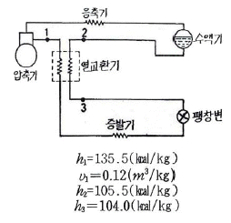
- 5.06 냉동톤
- 4.82 냉동톤
- 2.71 냉동톤
- 2.58 냉동톤
(정답률: 52%)
3과목: 배관일반
41. 주철관 이음방법이 아닌 것은?
- 플라스턴 이음
- 빅토릭 이음
- 타이튼 이음
- 플랜지 이음
(정답률: 58%)
42. 오수만을 정화조에서 단독으로 전화처리한 후 공공하수고에 방류하며, 잡배수 및 우수는 그대로 공공하수도로 방류되는 방식은/
- 합류식
- 분류식
- 단독식
- 일체식
(정답률: 76%)
43. 운반되는 열매체에 의해 공조설비 방식을 분류한 것이다. 해당되지 않는 것은?
- 전 공기 방식
- 전 수 방식
- 수ㆍ공기 방식
- 부분 공기 방식
(정답률: 85%)
44. 다음은 배관의 K.S 도시 기호이다. 이중 옳지 않은 것은?
- 고압배관용 탄소강 강관 - SPPH
- 저온배관용 강관 - SPLT
- 수도용 아연도금 강관 -SPTW
- 일반 구조용 탄소강 강관 - SPS
(정답률: 64%)
45. 다음 중 배관의 이음에 있어서 플랜지형 기호는?
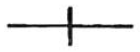
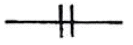
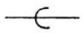
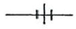
(정답률: 76%)
46. 도시가스 배관을 도로에 매설할 경우 기준으로 틀린 것은?
- 배관의 외면으로부터 도로의 경계까지 1m이상 수평거리를 유지할 것
- 시가지의 도로노면 밑에 매설하는 경우에는 노면으로부터 배관의 외면까지 깊이를 1.5m 이상으로 할 것
- 시가지외의 도로노면 밑에 매설하는 경우에는 노면으로부터 배관의 외면까지 깊이를 1m 이상으로 할 것
- 인도 등 노면외의 도로 밑에 매설하는 경우에는 지표면으로부터 배관의 외면까지 깊이를 1.2m 이상으로 할 것
(정답률: 65%)
47. 단열시공기 곡면부의 시공에 적합하고 표면에 아스팔트 피복을 하면 -60℃까지 보냉이 되며 양모, 우모 등의 모(毛)를 이용한 피복재는?
- 실리카울(silica wool)
- 아스베스토(asbestos)
- 섬유유리(glass wool)
- 펠트(felt)
(정답률: 75%)
48. 다음 그린은 감압밸브 주위의 배관도이다. 명칭이 틀린 것은?
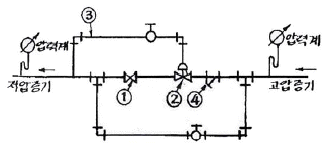
- ① 스톱밸브
- ② 감압밸브
- ③ 파이로트관
- ④ 티이
(정답률: 84%)
49. 다음 중 간접 가열식 급탕 방식으 특징이 아닌 것은?
- 호텔 병원 드의 대규모 급탕 설비에 적합하다.
- 보일러의 내면에 스케일 부착이 적다.
- 증기난방을 할 때 그 증기의 일부를 급탕 가열코일에 도입하도록 설치하면 별도로 급탕용 보일러가 필요 없다.
- 고압 보일러에 적합하다.
(정답률: 42%)
50. 배수관 설치 시 유의사항으로 틀린 것은?
- 배수관은 하류방향으로 갈수록 관의 지름을 작게 설계한다.
- 지중 혹은 지하층 바닥에 매설하는 배수관은 50mm 이상으로 한다.
- 배수 수평지관의 관경은 이것과 접속하는 기구 배수관의 최재 관경 이상으로 한다.
- 배수 수직관의 관경은 이것과 접속하는 배수 수평지관의 최대 관경 이상으로 한다.
(정답률: 60%)
51. 배관지지에 대한 설명이 옳지 않은 것은?
- 배관의 외관 보호를 위해 지지한다.
- 지동 충격에 대해 지지한다.
- 열팽창에 의한 배관계를 지지한다.
- 배관계 중량을 지지한다.
(정답률: 59%)
52. 급탕설비 시공시 강관용 신축이음은 직관 몇 m 마다 한 개씩 설치하는 것이 좋은가?
- 40
- 30
- 20
- 10
(정답률: 74%)
53. 냉각탑에서 냉각수는 수직 하향방향이고 공기는 수평방향인 형식은?
- 평행류형
- 직교류형
- 혼합형
- 대향류형
(정답률: 84%)
54. 지름 40mm인 파이프에 매분 1.2m3의 물을 공급하려고 한다. 물의 속도(m/sec)를 약 얼마로 해야 하는가?
- 8.7
- 12.4
- 15.9
- 17.6
(정답률: 39%)
55. 저압 가스배관의 유량을 산출하는 식은? (단, Q:유량(m3/h), D:관지름(cm), ⊿P:압력손실(mmAq), S:비중, K:유량계수, L:관의 길이(m))
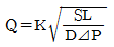
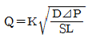
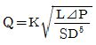
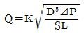
(정답률: 62%)
56. 유기질 보온재로 냉수, 냉매배관, 냉각기 등의 보냉용으로 사용되는 것은?
- 암면
- 글래스울
- 규조토
- 코르크
(정답률: 62%)
57. 배관용 패킹 배료를 선택할 때 고려해야 할 사항으로 옳지 않은 것은?
- 탄력
- 진동의 유무
- 유체의 압력
- 재료의 부식성
(정답률: 58%)
58. 복사난방을 바닥패널로 시공할 경우 적당한 가열면의 온도범위는?
- 30~33℃
- 40~43℃
- 50~53℃
- 60~63℃
(정답률: 75%)
59. 배관이 응력을 받아서 휘어지는 것을 방지하고 팽창시 움직임을 바르게 유도하는 장치이며 배관의 굽힙장소나 신축이음 부분에 설치하여 관의 회전을 방지하는 역학을 하는 것은?
- 가이드(Guide)
- 롤러 서포트(Roller Support)
- 리지드(Rigid)
- 파이프 슈(Pipe Shoe)
(정답률: 48%)
60. 다음 도시기호가 나타내는 것은?
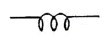
- 모세관
- 신축이음
- 오리피스
- 스프레이
(정답률: 66%)
4과목: 전기제어공학
61. 전압계에 대한 설명으로 옳지 않은 것은?
- 동작원리는 전류계와 같다.
- 회로에 직렬로 접속한다.
- 내부저항이 있다.
- 가동코일형은 직류측정에 사용된다.
(정답률: 69%)
62. 동기속도가 3600rpm인 동기발전기의 극수는 얼마인가? (단, 주파수는 60Hz 이다.)
- 2극
- 4극
- 6극
- 8극
(정답률: 68%)
63. 다음 중 미분요소에 해당하는 것은?
- G(S)=K
- G(S)=KS
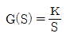
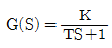
(정답률: 61%)
64. 그림과 같은 계전기 접점회로의 논리식으로 알맞은 것은?
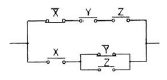
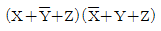
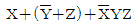
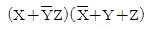
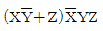
(정답률: 65%)
65. PI 제어동작은 프로세스제어계의 정상특성 개선에 흔히 사용된다. 이것에 대응하는 보상요소는?
- 동상 보상요소
- 지상 보상요소
- 진상 보상요소
- 지상 및 진상 보상요소
(정답률: 84%)
66. SCR의 설명으로 옳지 않은 것은?
- 순방향으로 부성저항을 가지고 있다.
- OFF 상태에서의 저항은 매우 작다.
- 단방향성 사이리스터이다.
- 3단자 형식이다.
(정답률: 33%)
67. 서로 같은 방향으로 전류가 흐르고 있는 두 도선 사이에는 어떤 힘이 작요하는가?
- 서로 미는 힘
- 서로 당기는 힘
- 하나는 밀고, 하나는 당기는 힘
- 회전하는 힘
(정답률: 68%)
68. 다음 중 시퀀스제어에 속하지 않는 것은?
- 컨베이어 제어
- 엘리베이터 제어
- 주파수 조정
- 세탁기
(정답률: 69%)
69. 교류 전류의 한 주기에 대항 평균값은 얼마인가? (단, Im은 전류의 최대값이다.)
- 0
- Im
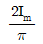
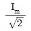
(정답률: 33%)
70. 다음의 블록선도의 출력이 4개 되기 위해서는, 입력은 얼마이어야 하는가?
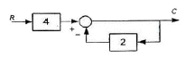
- 2
- 3
- 4
- 5
(정답률: 63%)
71. 다음 중 압력을 감지하는데 가장 널리 사용되는 것은?
- 마이크로폰
- 스트레인 게이지
- 회전자기 부호기
- 전위차계
(정답률: 78%)
72. 100V, 10A, 전기자저항 1Ω, 회전수 1800rpm인 직류 전동기의 역기전력은 몇 [V] 인가?
- 80V
- 90V
- 100V
- 110V
(정답률: 60%)
73. 어떤 회로의 전압이 V[V] 이고 전류가 I[A] 이며 저항이 R[Ω] 일 때 저항이 10% 감소 되면 그 때의 전류는 처음 전류 I[A]의 약 몇 배가 되는가?
- 1.11배
- 1.41배
- 1.73배
- 2.82배
(정답률: 64%)
74. 목표치가 정하여져 있으며, 입ㆍ츨력을 비교하여 신호전달 경로가 반드시 폐루프를 이루고 있는 제어는?
- 비율차동제어
- 조건제어
- 시퀀스제어
- 피드백제어
(정답률: 84%)
75. 목표값이 임의의 변화에 추종하도록 구성되어 있는 것을 무엇이라 하는가?
- 자동조정
- 프로세스제어
- 서보기구
- 정치제어
(정답률: 58%)
76. 그림의 신호 흐름선도에서 전달함수 C/R는?
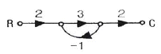
- -1
- 2
- 3
- 4
(정답률: 46%)
77. 그림과 같은 회로에서 ab에 흐르는 전류는 몇 [A] 인가? (단, 저항의 단위는 모두 Ω이다.)
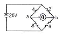
- 0
- 5A
- 10A
- 20A
(정답률: 38%)
78. 무효전력의 나타내는 단위는?
- VA
- W
- Var
- Wh
(정답률: 73%)
79. 한 대의 용량이 P[kVA]인 변압기 2대를 가지고 V결선으로 했을 때 경우의 용량은 어떻게 나타낼 수 있는가?
- P[kVA]
- √3P[kVA]
- 2P[kVA]
- 3P[kVA]
(정답률: 52%)
80. 제어계의 응답 속응성을 개성하기 위한 제어동작은?
- D동작
- I동작
- PD동작
- PI동작
(정답률: 72%)